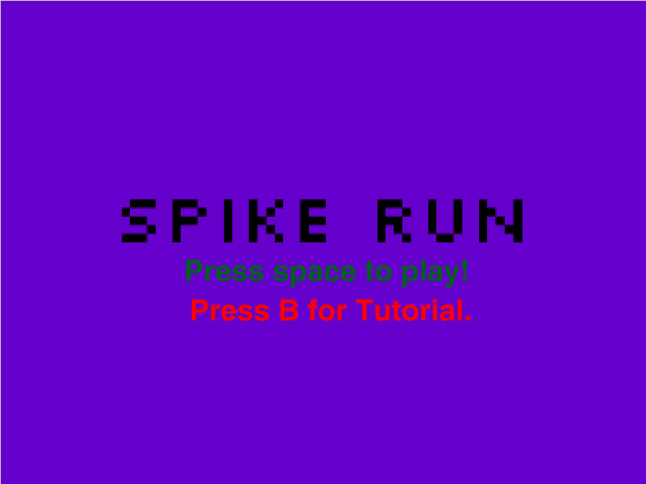
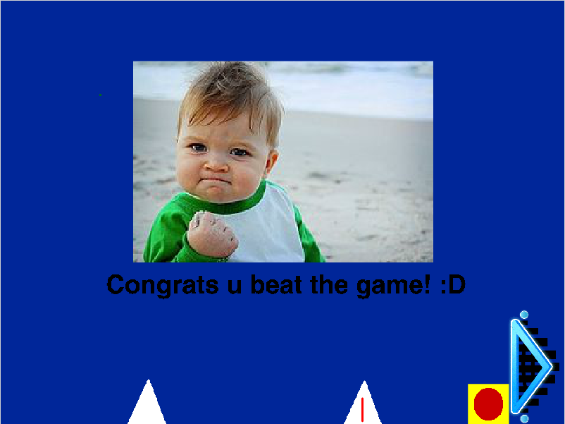

Porfolio
PythonSpike Run (Game)
Some screenshots of the game
 Link to the Game!
https://scratch.mit.edu/projects/258952007/#fullscreenSpike Run was my first ever game. Developed using Scratch, I was inspired by Geometry Dash, a game that I loved at the time. Although
it was a hard to make the game, considering I had to make the character jump and move, as well as working on collision detection. In order
To play, you press W to jump, space to play the game, and b for the tutorial. You will lose if you touch the spikes, and win if
if you touch the triangular portal, you beat the game.
Benny's Adventures (Choose Your Own Adventure Story)
Benny's Adventures is a choose your own adventure story written with the computer programming language called Python. It begins with a boy named Benny waking up in a spaceship. He does not know where he woke up, so he decided to explore; but before he can leave the room, he meets an alien named General Zorag, who strictly forbids him from exploring the ship.

Q&A
Q: Describe the incremental and iterative development process of your program, focusing on two(2) distinct points in that process. Describe
the difficulties and/or opportunities you encountered AND how they were resolved or incorporated. At least one of the two points must refer to
independent program development.
A: Because this is a choose your own adventure story, many of the functions used are either copies of each other or are very similar. As with
any coding project, trial and error is involved. I remember at the end when my partner and I tested the story and it did not result the way we
expected. It took hours of fixing our code before we finally got the expected result. It turned out that we used a comparison(==) function when
what we really needed was a "not in" boolean for the while loop that checks for errors in user input. In addition to trial and error, we also
used a lot of repeated code, since the requirement was to not only to give the user a choice, but to also check for an error should the user
misclick. Some of the code blocks that we used the most were the blocks that define a function and while loops, which are used for giving the
user choice and checking for user input errors, respectively.
Q:Explain why organizing scenes of your story into functions is a form of procedural abstraction. What are the advantages of abstracting
your scenes into functions?
A: When converting a story into a computer program, there are many advantages to it. Unlike a book, you can access the story across any
platform and at any time you like. Another advantage that functions have over traditional stories is how it is much more interactive
than books. The text presentation as well as the ability to gain user input engages the audiences much more than just flipping pages.
Q:Think back to other stories you read, identify one or two stories you particularly liked and a quick reason why you liked it.
A: A story I found to be likeable was Plankton Strikes Back because it's plot was intresting, and I really likehow short it is
compared to others, which had something close to essays to read before and in between choices.